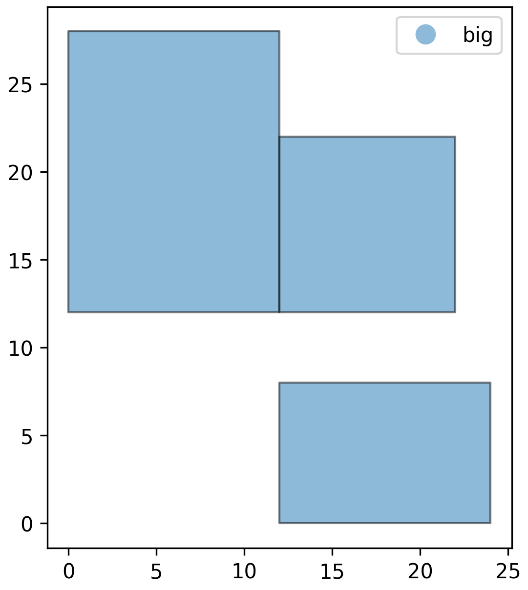

User Guide
Input Data
UrbanOPT requires input data in the form of a GeoDataFrame with the following columns:
| Column | Type | Description |
|---|---|---|
pid |
int/string | Unique identifier for each development opportunity |
label |
string | Type/category of the development (e.g., "big", "small", "adu", "bment") |
start |
string | Starting state/type of the site (e.g., "small", "empty_site") |
end |
string | Ending state/type after development (e.g., "big", "small") |
desc |
string | Description of the development opportunity |
cost_* |
numeric | Cost columns (any column starting with "cost_" will be treated as an objective) |
contribution |
numeric | The benefit/contribution of the development (e.g., number of people housed) |
geometry |
shapely geometry | Spatial geometry of the development opportunity |
For the purposes of the rest of this guide, we use the toy dataset from this notebook, which looks like.
pid label start end desc geometry cost_dollars cost_bus contribution
1 big small big A big development POLYGON ((10 0, 10 10, 0 10, 0 0, 10 0)) 104386.91 20.000000 5.0
2 big small big A big development POLYGON ((24 0, 24 8, 12 8, 12 0, 24 0)) 103929.83 6.000000 5.0
3 big small big A big development POLYGON ((12 12, 12 28, 0 28, 0 12, 12 12)) 229502.80 19.313208 10.0
4 big small big A big development POLYGON ((22 12, 22 22, 12 22, 12 12, 22 12)) 101777.98 10.630146 5.0
5 small empty_site small A small development POLYGON ((12 5, 12 16, 5 16, 5 5, 12 5)) 64971.60 18.000000 4.0
6 small empty_site small A small development POLYGON ((15 8, 15 15, 8 15, 8 8, 15 8)) 48816.99 15.297059 2.0
7 small empty_site small A small development POLYGON ((27 5, 27 12, 20 12, 20 5, 27 5)) 37212.67 3.000000 2.0
8 small empty_site small A small development POLYGON ((14 20, 14 27, 5 27, 5 20, 14 20)) 61331.42 21.931712 3.0
9 small empty_site small A small development POLYGON ((32 25, 32 32, 25 32, 25 25, 32 25)) 42506.28 20.000000 2.0
10 small empty_site small A small development POLYGON ((25 18, 25 25, 18 25, 18 18, 25 18)) 45813.47 13.928388 2.0

Optimization Model
Initializing
Initializing the optimizer is a two step process. First, construct an opt object, then call .build_variabes() to initialize all the gurobi vars.
# Construct the optimizer and initialize the variables
opt = UrbanOPT(opportunities)
opt.build_variables()
Objective Functions
The objective function is a linear combination of cost_* columns. The objective function can be constructed with .set_objectives(), which expects a dictionary of objective weights for the cost_* columns.
Notes:
- Any cost column that doesn't start with
cost_will not be recognized. - Any cost column that is not explicitly given a weight will be ignored.
# For a single objective
w = {"cost_dollars": 1.0}
opt.set_objective(weights=w)
# For multiple objectives
w = {"cost_dollars": 1.0, "cost_bus": 1.0} # We have given them equal weights
opt.set_objective(weights=w)
Note
Note that we gave the both objectives the same weight, which is a little problematic in reality because cost_dollars is on the order of \(\times 10^5\) while cost_bus is \(\times 10^1\)
Constraints
UrbanOPT currently supports 5 classes of constraints, through the following methods:
| Method | Description |
|---|---|
add_conversion_constraints() |
specifies a min/max contribution within some boundary |
add_zone_difference_constraints() |
specifies the min/max difference in contribution between two regions |
add_conversion_constraints() |
specifies the min/max number of opportunities that can be developed from a given start type |
add_mutual_exclusion_constraints() |
specifies (by label) which opportunities cannot intersect |
add_max_contribution_near_point() |
specifies the max contribution within a given radius of a point |
Examples:
# We must add housing for at least 20 people
opt.add_contribution_constraints(
limits = 20,
sense = ">=",
boundaries = None, # default,the entire region
tag = "min_pop_increase",
)
# Ensure opportunities don't overlap
opt.add_mutual_exclusion_constraints(
label1 = "small",
label2 = None, # Default, We can specify this if we only want to exclude overlaps with a single label type
tag = "no_intersect_small",
)
opt.add_mutual_exclusion_constraints(
label1 = "big",
tag = "no_intersect_big",
)
Debugging
There are two ways to view the model:
- debug_model: which prints a summary of the model state
- export_model: which save Gurobi's model.lp file (can be huge)
Console output:
# output
Gurobi Model Debug Info
- Variables: 10
- Constraints: 27
- Objective set: True
- Model status: 1
Verbose console output:
# output
Gurobi Model Debug Info
- Variables: 10
- Constraints: 27
- Objective set: True
- Model status: 1
Objective Weights:
cost_dollars: 1.0
cost_bus: 1.0
Variables (first 20):
x_1: not solved
x_2: not solved
x_3: not solved
x_4: not solved
x_5: not solved
x_6: not solved
x_7: not solved
x_8: not solved
x_9: not solved
x_10: not solved
Constraint Tags:
[min_pop_increase] 1 constraints
[no_intersect_small] 13 constraints
[no_intersect_big] 13 constraints
Gurobi log files:
Solving
Solving is as simple as calling .solve(). The selected development opportunities can be retrieved using .get_selected_pids()
Console output:
# output
Set parameter LogToConsole to value 0
Optimization Summary
Objective Value : 435246.55
Total Contribution: 20.00
Solve Time : 0.000 sec
Selected Pathways : 3
Verbose console output:
# output
Set parameter LogToConsole to value 1
Gurobi Optimizer version 13.0.1 build v13.0.1rc0 (win64 - Windows 11.0 (26100.2))
CPU model: 13th Gen Intel(R) Core(TM) i7-13700K, instruction set [SSE2|AVX|AVX2]
Thread count: 16 physical cores, 24 logical processors, using up to 24 threads
Optimize a model with 27 rows, 10 columns and 62 nonzeros (Min)
Model fingerprint: 0xc8408c40
Model has 10 linear objective coefficients
Variable types: 0 continuous, 10 integer (10 binary)
Coefficient statistics:
Matrix range [1e+00, 1e+01]
Objective range [4e+04, 2e+05]
Bounds range [1e+00, 1e+00]
RHS range [1e+00, 2e+01]
Found heuristic solution: objective 437864.85321
Presolve removed 27 rows and 10 columns
Presolve time: 0.00s
Presolve: All rows and columns removed
Explored 0 nodes (0 simplex iterations) in 0.00 seconds (0.00 work units)
Thread count was 1 (of 24 available processors)
Solution count 2: 435247 437865
Optimal solution found (tolerance 1.00e-04)
Best objective 4.352465533537e+05, best bound 4.352465533537e+05, gap 0.0000%
Solution output:
Visualizing the output:
# Filter our original data using the selected pids
filtered = opportunities[opportunities.pid.isin(opt.get_selected_pids())]
filtered.plot(
column="label",
edgecolor="black", # Adds the border
linewidth=1, # Adjusts border thickness
alpha=0.5, # Transparency (0 is clear, 1 is opaque)
legend=True
)
